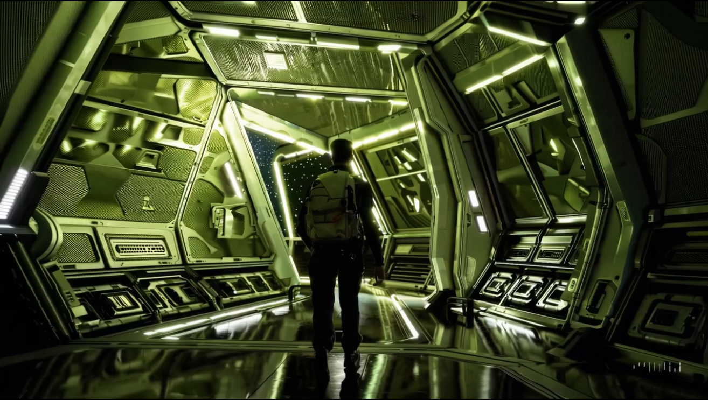

🚀 Remix 기능이란?
Remix는 기존 영상(Before)을 바탕으로, 사용자가 제시하는 텍스트 프롬프트(수정 지시)를 반영하여 새로운 영상(After)을 만들어내는 기능입니다.
- 핵심: 영상의 특정 요소를 **변경, 추가, 제거**
- 장점: 복잡한 편집 프로그램 없이, 자연어(일상적인 대화체)로 영상 편집 가능
- 원리: 원본 영상의 맥락(카메라 구도, 움직임, 조명 등)은 유지하고, 지시한 부분만 자연스럽게 수정
🎨 Remix 기능 연습 예제
[1단계] 간단한 요소 변경하기: 자동차 색깔 바꾸기
Before: 기준 영상
프롬프트: `A red sports car driving on a coastal road, sunny day, cinematic shot.`
After: Remix 적용 후
Remix 프롬프트: `Change the car's color to a sleek black.`
[2단계] 배경 완전히 바꾸기: 숲속에서 우주정거장으로
Before: 기준 영상
프롬프트: `A person walking through a dense green forest, sunlight filtering through the trees.`
After: Remix 적용 후
Remix 프롬프트: `Change the background to a futuristic space station interior...`
[3단계] 요소 제거 및 추가하기: 강아지를 로봇으로
Before: 기준 영상
프롬프트: `A golden retriever happily running across a green lawn.`
After: Remix 적용 후
Remix 프롬프트: `Remove the dog and add a small, friendly robot rolling across the lawn...`
✨ PRO-TIP
- 한 번에 하나씩: 처음에는 한 번에 하나의 요소만 변경하는 연습을 하는 것이 좋습니다.
- 구체적으로: '바꿔줘' 보다는 'A를 B로 바꿔줘' 처럼 명확하고 구체적으로 지시할수록 좋은 결과를 얻을 수 있습니다.
- 반복과 실험: 다양한 프롬프트를 시도하며 Remix 기능이 어디까지 가능한지 실험해 보세요. 여러분의 창의력이 곧 Sora의 한계입니다!